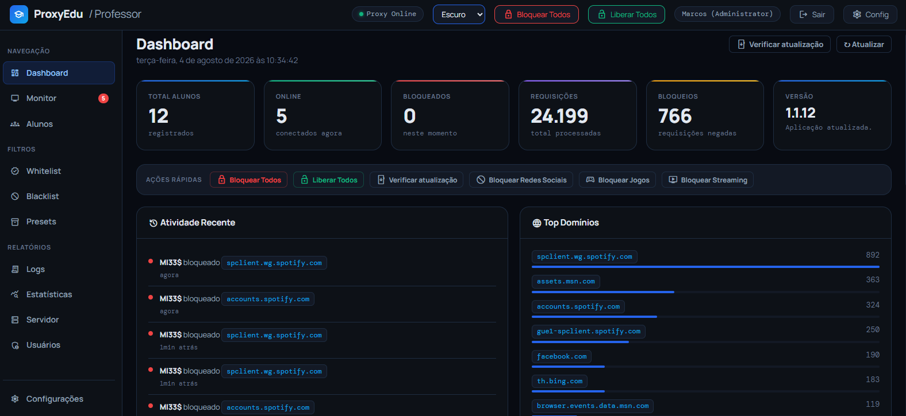

Monitor em tempo real
Acompanhe computadores online e offline, endereços acessados e ações aplicadas em cada estação.
O ProxyEdu centraliza o controle de acesso, o acompanhamento das estações, as regras de bloqueio e os relatórios em um painel moderno e fácil de usar.

Controle de acesso, visualização dos computadores, filtros e relatórios com uma experiência consistente.
Acompanhe computadores online e offline, endereços acessados e ações aplicadas em cada estação.
Bloqueie domínios, redes sociais, jogos, streaming ou todos os acessos com ações rápidas.
Crie listas de sites permitidos e bloqueados, com regras organizadas e ativação independente.
Aplique conjuntos de regras para redes sociais, jogos e streaming com apenas um clique.
Visualize requisições, bloqueios, domínios mais acessados e atividade recente do ambiente.
Acompanhe CPU, memória, conexões, rede e recursos internos diretamente pelo dashboard.
Clique em qualquer tela para ampliar.
O servidor centraliza as regras e os clientes enviam informações das estações dos alunos.
O projeto pode ser executado em ambiente Windows com .NET 8. Consulte o repositório para instruções completas, releases e atualizações.
Abrir documentação# Clone o projeto
git clone https://github.com/MarcosBravin/ProxyEdu.git
# Entre na pasta
cd ProxyEdu
# Compile a solução
dotnet build
# Execute o servidor
dotnet run --project ProxyEdu.ServerExplore o código, acompanhe o desenvolvimento e contribua com novas ideias.